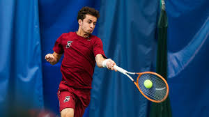

- Tennis info
- Tennis table
- Tennis video
Bovandakutyun



| Year | Australian open | French open | Wimbeldon | US open |
| 2022 | Spain Rafael Nadal (21/22) | Spain Rafael Nadal (21/22) | Serbia Novak Djokovic (21/22) | Spain Carlos Alcaraz (1/1) |
| 2021 | Serbia Novak Djokovic (18/22) | Serbia Novak Djokovic (19/22) | Serbia Novak Djokovic (20/22) | Russia Daniil Medvedev (1/1) |
| 2020 | Serbia Novak Djokovic (17/22) | Spain Rafael Nadal (20/22) [m] | cancelled (COVID-19 pandemic) | Austria Dominic Thiem (1/1) |
| 2019 | Serbia Novak Djokovic (15/22) | Spain Rafael Nadal (18/22) | Serbia Novak Djokovic (16/22) | Spain Rafael Nadal (19/22) |